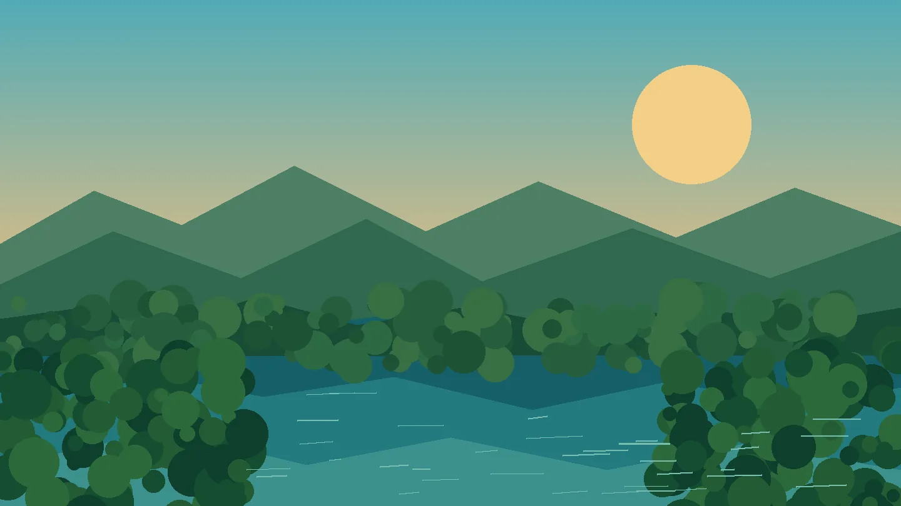

River
Life on the water
The Congo River is the deepest river in the world and a lifeline for trade, travel, and wildlife.

Central Africa
Explore the rivers, rainforests, and living cultures of the Democratic Republic of the Congo.
Welcome
The Democratic Republic of the Congo is a vast Central African nation shaped by the Congo River and the world's second-largest tropical rainforest. Its landscapes support rich wildlife and warm, diverse communities. This site is a starting point for anyone curious about traveling there.
Use the destinations page to browse places by interest, or head to plan your visit to tell us what you would like to see.
Why visit
Three reasons travelers put the Congo basin on their list.
The Congo River is the deepest river in the world and a lifeline for trade, travel, and wildlife.
Gorillas, bonobos, and forest elephants live in reserves found nowhere else on Earth.
From rumba music to bustling markets, Congolese cities are full of rhythm and color.